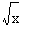
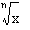

Keystroke: [\]

Returns the principle value square root of x.
Keystroke: [Ctrl] [\]

Returns the nth root of x.
Operands:
- x is a scalar number or expression.
- n is a positive integer.
Notes:
- In general, every number has n nth roots. For example, 2 and −2 are both square roots of 4. The square root operator returns the principal-valued root, the one with the smallest non-negative complex argument. Since the argument of 2 is 0, and that of −2 is π, the result is 2. This is also the real-valued root.
- The nth root returns a real root whenever one is available. If x is a negative real number, the nth root of x returns a real root if n is odd, and returns a complex root if n is even. To return the principal value of the nth root of x, raise x to the power 1/n instead.